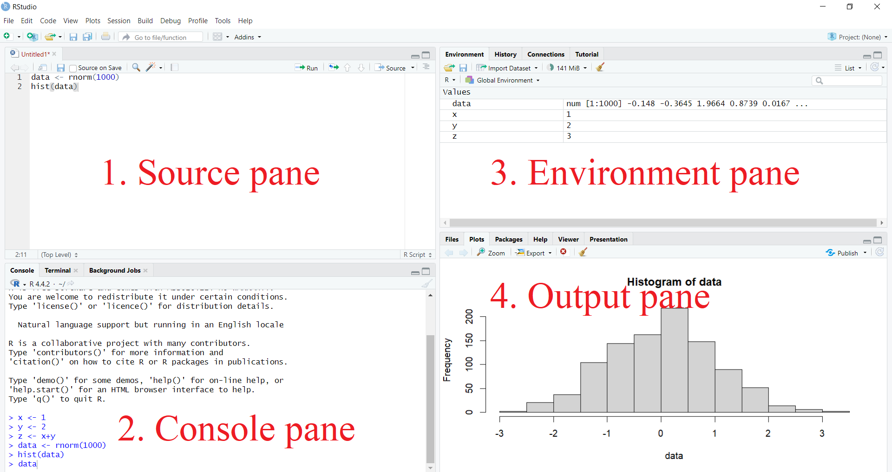
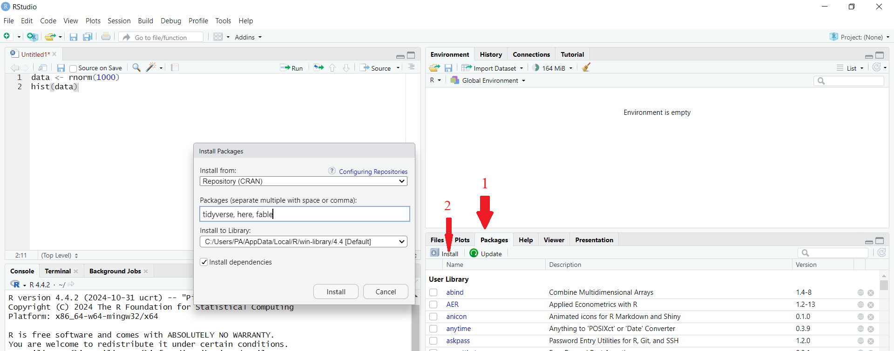

1 Introduction to R and RStudio
1.1 Installing R and Rstudio
Step 1: First download R freely from the Comprehensive R Archive Network (CRAN) https://cran.r-project.org/. (At the moment of writing, R 4.4.2 is the latest version. Choose the most recent one.)
Step 2: Then install R Studio’s IDE (stands for integrated development environment), a powerful user interface for R from [https://posit.co/download/rstudio-desktop/](https://posit.co/download/rstudio-desktop/. Get the Open Source Edition of RStudio Desktop. RStudio allows you to run R in a more user-friendly environment.
You need to install both R and Rstudio to use RStudio.
If you have a pre-existing installation of R and/or RStudio, I highly recommend that you reinstall both and get as current as possible.
Step 3: Then open Rstudio.
1.1.1 Posit Cloud
In 2022, RStudio changed its corporate name to Posit with the aim of expanding its focus beyond R to include users of Python and Visual Studio Code.
If you don’t want to download or install R and R Studio, you can use RStudio on Posit Cloud for free.
1.2 RStudio layout
The RStudio interface consists of four panes: See Figure 1)
Source pane
Console pane
Environment pane, containing the Environment, History, Connections, Build, and Tutorial tabs
Output pane, containing the Files, Plots, Packages, Help, Viewer, and Presentation tabs
1.2.1 Console Pane
This is where you type and execute all your R commands.
You can enter R commands after the ‘>’ prompt, and R will process and execute them.
This is the most essential window, as it is where R performs computations and executes your instructions.
1.2.2 Source pane
In this window, a collection of commands (scripts) can be edited and saved.
If this window is not visible, you can open it via File → New File → R Script.
Simply typing a command in the Source pane is not enough; it must be sent to the Console before R executes it.
To run a line from the Source pane, place your cursor on the desired line or select multiple lines to execute, then click Run or press CTRL + ENTER to send them to the Console pane.
Make sure to save the ‘Untitled1’ file as a
*.Rscript.
1.2.3 Environment pane
- This window contains multiple tabs: Environment, History, Connections, Build, and Tutorial.
The Environment tab displays all active objects.
For data frames, clicking the grid symbol opens the full data frame in the Source pane.
The History tab shows previously typed commands.
To send a command in the history tab to the Source pane, select it and click the “To Source” icon, or click “To Console” to execute it in the Console.
1.2.4 Output Pane
This window contains multiple tabs: Files, Plots, Packages, Help, Viewer, and Presentation.
It allows you to open files, view plots (including previous ones), install and load packages, access help functions, and display web content such as Shiny apps and Quarto-generated web pages.
Now you are familiar with the layout. Let’s begin with R basics.
1.3 Installing an R Package
The primary source for R packages is CRAN (Comprehensive R Archive Network).
Packages can be installed using the
install.packages()function in R.To install a single package, pass its name as the first argument to
install.packages().The following code installs the tidyverse package from CRAN:
install.packages("tidyverse")This command downloads and installs the
tidyversepackage from CRAN.Any dependencies required by the package will also be downloaded and installed.
Installing the tidyverse package may take several minutes, but you only need to do this once. Think of it like installing a mobile app—you install it once on your smartphone and can use its features until a new version is released, at which point you may need to update it
1.3.1 Alternative way to install R packages in Rstudio
An alternative way to install R packages is through the Packages tab in the Output Pane.
Navigate to the Packages tab in the Output Pane and click Install.
Under “Install from,” select “Repository (CRAN)”.
In the Packages field, enter the name of the package you want to install.
To install multiple packages at once, separate the package names with commas.
Finally, click Install.

1.4 Loading an R Package
Installing a package does not automatically make it available for use; you must load it. It’s like a mobile app—you need to open it to access its functionalities.
The
library()function is used to load installed packages into R.To load the tidyverse package, use:
library(tidyverse)── Attaching core tidyverse packages ──────────────────────── tidyverse 2.0.0 ──
✔ dplyr 1.1.4 ✔ readr 2.1.5
✔ forcats 1.0.0 ✔ stringr 1.5.1
✔ ggplot2 3.5.1 ✔ tibble 3.2.1
✔ lubridate 1.9.3 ✔ tidyr 1.3.1
✔ purrr 1.0.2
── Conflicts ────────────────────────────────────────── tidyverse_conflicts() ──
✖ dplyr::filter() masks stats::filter()
✖ dplyr::lag() masks stats::lag()
ℹ Use the conflicted package (<http://conflicted.r-lib.org/>) to force all conflicts to become errorsNote: Do not put the package name in quotes when using library().
Some packages display messages when loaded, while others do not.
1.5 Getting Started with R
For a detailed introduction to R, refer to:
An Introduction to R: https://cran.r-project.org/doc/manuals/R-intro.pdf